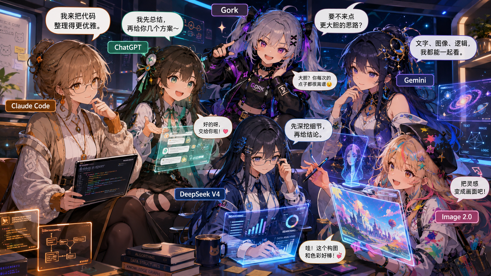

把今天过得具体一点：一些很普通但想留下来的瞬间
可以写一顿饭、一段路、一场雨，或者某个突然让人安静下来的下午。
计划发布DAILY ARCHIVE / ANIME VIBES / CITY LIGHTS
这里放一些日常分享：走过的地方、读过的书、看过的电影、偶尔冒出来的想法， 以及那些当时觉得很小、回头看却值得保存的片段。

POSTS
先把博客框架搭好，后续可以按轻松的栏目慢慢补充，不追热点，只记录生活本身。
GALLERY
不用拍得多专业，只把当下看到的颜色、光线和心情留住。
傍晚的街道、偶然路过的小店、天气好的天桥和河边。
不一定是探店，更多是和谁一起吃、那天为什么开心。
车票、路牌、窗外、夜景，以及旅行里那些不太起眼的细节。
CURRENT STATUS